为软件工作搭建属于你的 AI 工作流
Bachata 是一个 VS Code 扩展，让 AI 助手按你编排的步骤协作：一个负责规划，另一个提出质疑，它们互相审查和修订，最终由你决定什么重要。
概览
Bachata 是什么
AI 助手是你用日常语言请求帮助的工具，比如规划功能、编写代码或查找缺陷。Bachata 运行在 Visual Studio Code 内，协调你已有的助手，例如 Codex 和 Claude Code.
你把工作编排成一条 流程：一串步骤，每一步都有角色、指令以及执行它的助手。例如，两位审查者各自独立读代码，然后互相质疑对方的问题，直到达成一致或把分歧交给你。
设定工作流
角色、指令、步骤顺序和审查轮次。
选择由谁来做
为每个角色指派 Codex、Claude Code 或浏览器对话。
复用并调整
从内置流程开始，编辑它，或者新建自己的流程。
跟踪结果
问题、决策和改动，以及真正执行过的检查。
Bachata 不包含 AI 服务或订阅，也从不创建 Git 提交。即使助手意见一致，AI 仍可能出错；一次运行完成并不证明代码正确。
前置条件
- VS Code 1.101.0 或更高版本。
- 在受信任的本地 VS Code 窗口中打开的文件夹。普通流程不需要 Git。任务清单执行需要 Git 仓库以及 Git 2.32 或更高版本。
- 已单独安装并登录的 Codex 或 Claude Code。若希望两个助手互相核查，请都安装。
- 可选： Browser Bridge Chrome 扩展，用于把 ChatGPT、Claude 或其他对话网站作为参与者。
开始使用
安装
- 安装 Visual Studio Marketplace 上的 Bachata。若使用离线或开发版本，请打开命令面板，运行 Extensions: Install from VSIX…，然后选择随附的 Bachata
.vsix文件。 - 在受信任的本地 VS Code 窗口中打开你要处理的文件夹。
- 通过各自 CLI 的登录流程安装并登录 Codex 或 Claude Code。
没有 Git 仓库时，普通流程仍可运行，但基于 Git 的改动跟踪、写入范围校验、补丁导出和仓库改动收敛都不可用。
Bachata 会在活动栏添加一个 Bachata 图标，并在 VS Code 欢迎页添加 开始使用 Bachata 引导。
用“诊断”检查就绪状态
运行 Bachata: 诊断。诊断会把所选流程的阻塞项与不可用的可选提供方区分开，每一项未通过的检查都会给出可直接执行的操作和针对性的重新检查。
- Codex 通过 app-server 握手探测，不会创建会话线程，也不会调用模型。
- Claude Code 通过
claude --version. - 探测在工作区根目录以受限环境运行。只存在于交互式 shell 的
PATH中的 CLI 是不可见的：请把bachata.codexCommand或bachata.claudeCommand设为它的绝对路径。
运行第一次审查
- 运行 Bachata: 设置。选择 审查代码。默认路径还提供 规划改动 和 修复缺陷；TODO 编排、浏览器提供方和自定义流程位于 高级工作流.
- 选择 单个快速助手 （由一个提供方完成工作）或 交叉核查的一对 （两个参与者分别工作并交叉核查一遍）。设置会列出已就绪的提供方，以及缺失的提供方还需要什么。
- 在输入框中描述你想审查的内容。也可以从编辑器开始： Bachata: 审查文件, 审查所选内容, 审查未提交的改动 等命令会准备草稿但不发送。
- 打开运行设置并阅读运行约定：本次运行可以读取和写入什么、有哪些提供方参与、会执行哪些检查。
- 发送。运行结束后打开结果。
{kind=link}
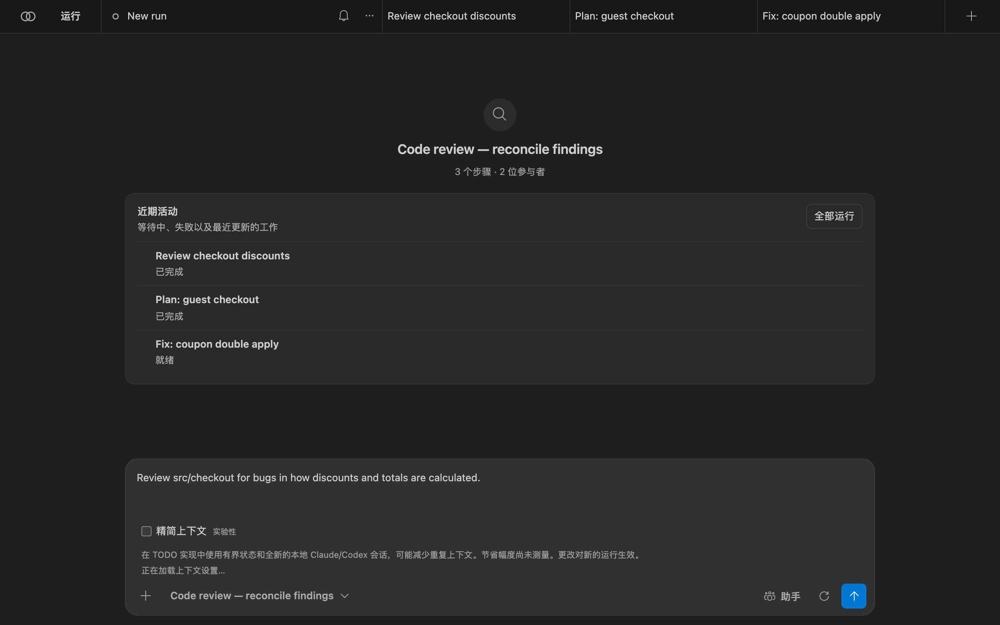
使用 Bachata
Bachata 面板
用 Bachata: 打开 或活动栏图标打开它。每次运行是顶部的一个标签页。一次运行有三个视图：
- “对话”：你的请求以及每位参与者的回答，按顺序排列。
- “执行”：流程各步骤及其状态，以及运行结果。
- “方向”：跨运行的项目目标、等待你处理的决策，以及仍待修复的已接受问题。
{kind=link}
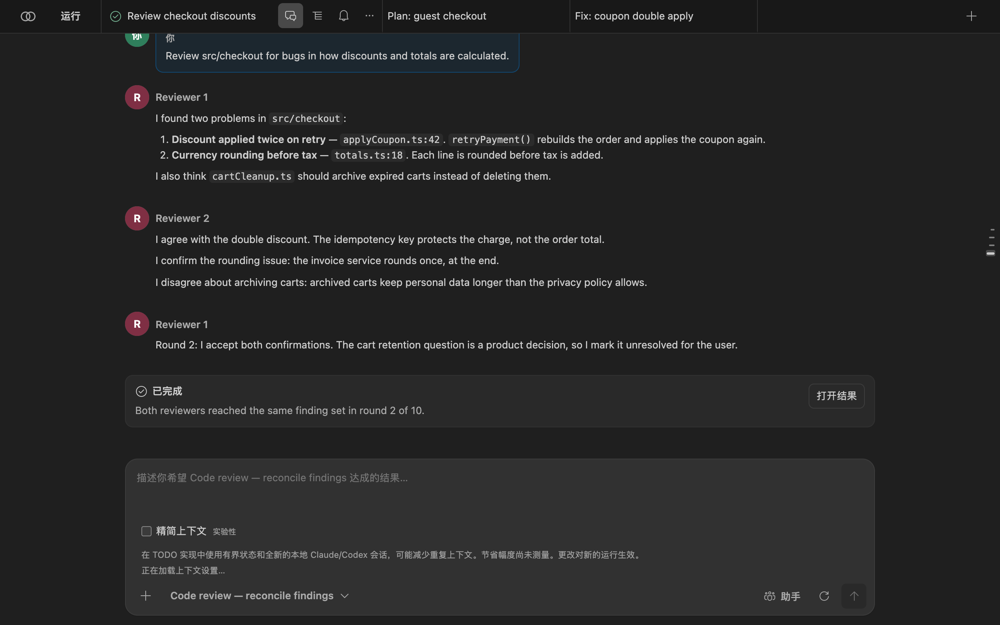
“运行” 会打开运行抽屉：搜索运行与提示词、显示已归档运行，并打开 “方向”。每次运行的 … 菜单可重命名、复制、归档或删除它。
{kind=link}
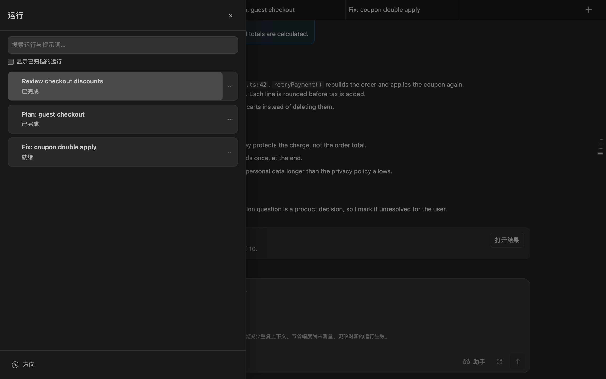
选择流程
流程选择器位于输入框下方。搜索涵盖名称、ID、说明和参与者角色。筛选器把常用、专用和内部工作流分开；自定义流程会增加 “自定义” 和 “全部”。选择器选定的是 工作内容; “助手” 选定的是 提供方.
{kind=link}
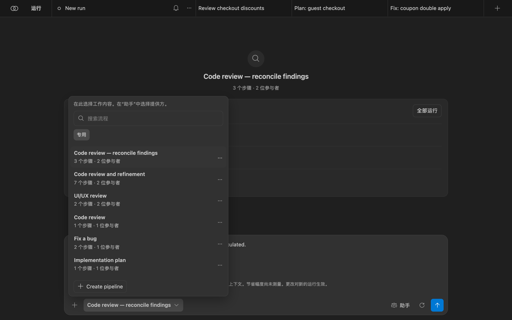
流程中的每个步骤都是以下之一：
agent：一位或多位参与者进行一个回合，可并行进行，或持续到达成一致；assignRoles：把你定义的角色绑定到助手；checklist：把已接受的问题转为严格的任务项；executeChecklist：由控制器执行所选任务项。它必须是最后一个启用的步骤。
一致性轮次有上限。达到轮次上限时，流程会规定接下来会发生什么：由人决定、失败，或由主导方裁定。达成一致只是选出某次运行的输出，并不证明该输出为真。参见 内置流程列表.
分配助手
“助手” 会列出所选流程需要的每个角色。为每个角色选择提供方，若提供方报告了模型，则再选择模型。改动仅对本次运行生效，并标记为已重新分配； “恢复默认” 可恢复流程自身的选择。
{kind=link}
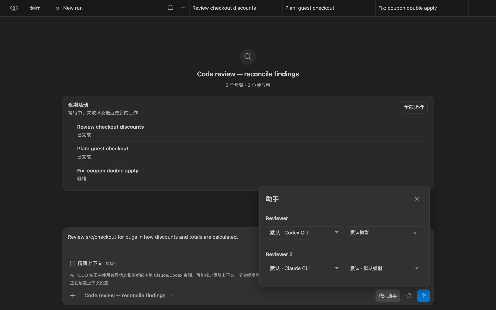
Bachata 不附带模型目录。当 Codex 能够列出其模型时，Bachata 会显示该列表，并拒绝已安装的 Codex 未提供的模型。当提供方无法列出模型时，你输入的名称会原样发送。Bachata 绝不会替你切换提供方或模型。要让某个提供方永不运行，请把它加入 bachata.disabledProviders.
Optional typed-decision adapter
The browser action interpreter also exposes a guarded, controller-injected adapter seam for experiments such as Laya's system_one decision shape. It receives only bounded, read-only controller candidates and may accept only a complete, high-confidence classification of those existing IDs. Invalid, ambiguous, oversized or late responses fall back to the existing local model path and deterministic extraction.
阅读运行约定
发送按钮旁的齿轮按钮会打开 “运行设置”. “运行选项” （迭代次数、固定或直到无问题模式、交付方式）仅对本次运行生效。 “运行详情” 是 Bachata 为本次运行解析出的约定：
- “保障”：本次运行能产生何种结果，例如 “只读”;
- “提供方” 及其就绪状态；
- “范围与提交”：工作目录、可写路径、可读路径和受保护路径。Bachata 绝不创建提交；
- “验证”：会执行哪些控制器检查（若有）；
- “运行上限”, “人工决策”, “回退方案”, “结束条件”;
- “每个提供方收到什么”：按提供方列出的外发上下文、排除项和脱敏项。
{kind=link}
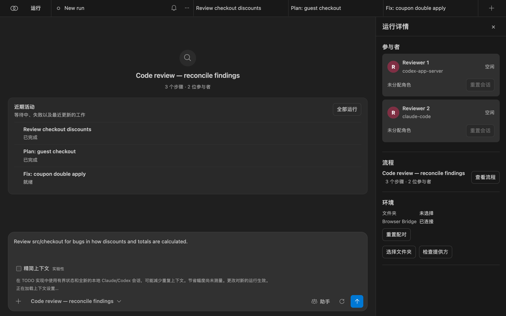
若有任何因素阻塞运行，例如提供方未就绪或仓库策略拒绝，约定会将其列出，且发送按钮在问题解决前保持禁用。
阅读结果
打开 “执行” （运行标签页上的列表图标），或在对话中选择 “打开结果” 。上方列出流程各步骤及其状态，底部栏显示已选中多少问题，并提供下一个流程。
{kind=link}
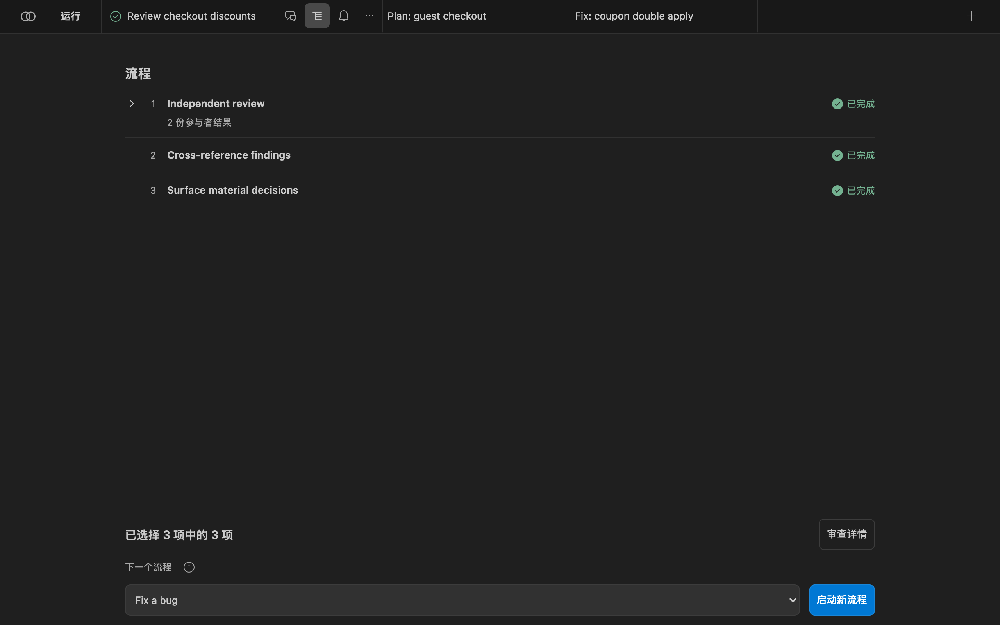
“审查详情” 会打开运行结果：
- “评估”，例如 “已完成 · 模型已审查 · 未验证”。它描述的是本次运行如何收尾，而不是软件是否正确。
- “最终裁定” 以及作出裁定的一方，例如两位审查者的一致意见。
- “问题”，分为 已达成一致的 问题（经质疑后被接受）和 未达成一致的 问题（需要你确认）。每个问题都带有位置、证据以及针对它提出的质疑。
- “评估详情”：未解决的风险、证据缺口，以及证据台账（改动文件、检查、裁定来源）。
{kind=link}
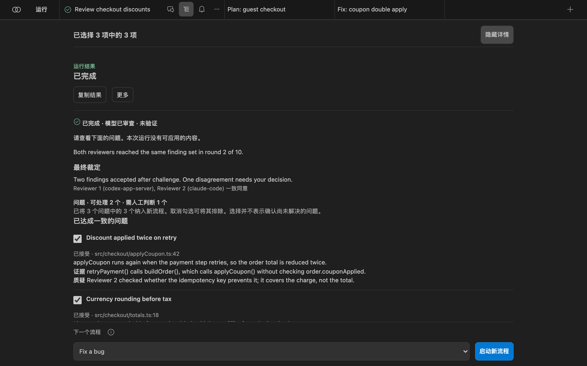
“复制结果” 会复制一份可读的摘要。 “更多” 可把问题发布到“问题”面板、打开源代码管理，并将运行导出为 JSON 包、Markdown 证据报告或 SARIF 问题清单。导出内容不包含提供方的对话 URL 或会话标识。
“方向”视图
“方向”跨运行保留重要内容，你无需翻阅对话记录。可从运行抽屉底部打开。它显示目标、下一步有用的操作，以及需要你处理的事项：
- “待处理的决策”：流程提出的、会改变方向的问题，附带权衡与证据；
- “待处理的问题”：参与者未达成一致的问题；
- “待修复的已接受问题”、已接受的方向与验收标准、审查进度、工件，以及仓库检查。
{kind=link}
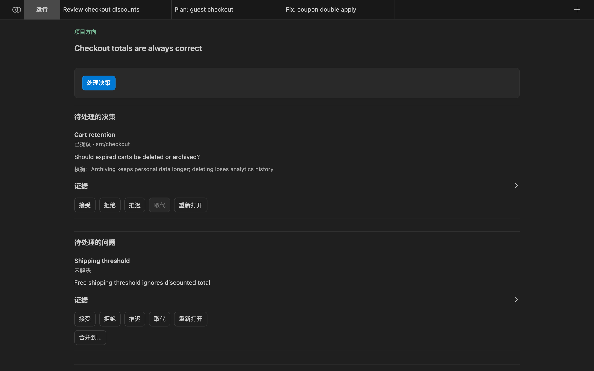
在条目状态允许时，你可以记录的处理方式：
| 处理方式 | 含义 |
|---|---|
| 接受 | 这是真实问题，Bachata 应据此行动。 |
| 拒绝 | 并非真实问题。它会离开活动区域，保留在历史中。 |
| 推迟 | 是真实问题，但现在不处理。 |
| 取代 | 已有的更新记录会取代这一条。 |
| 重新打开 | 已关闭的条目重新生效。需要书面理由和新的实质性证据。 |
对于流程在多位参与者质疑后已经接受的问题，你无需再次接受。你只在例外情况下介入。没有任何内容会被删除；已处理的条目会进入历史。
修复与应用
只读审查不会产生可应用的内容，改动由修复运行产生。在已接受的问题上，选择“方向”中的 “修复该问题” ，或在“执行”中把具备写入能力的流程（例如 Fix a bug ）设为下一个流程。
{kind=link}
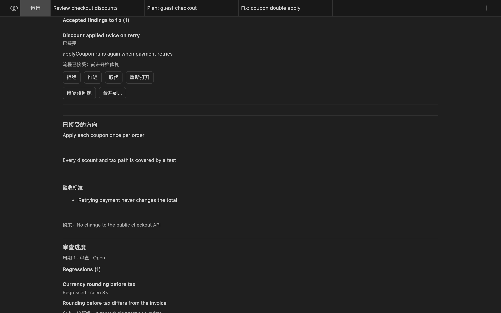
修复运行会得到仅限该问题的提示词：主题、位置、证据以及提出的质疑。Bachata 依次从 bachata.fixPipelineId、源运行中所选的流程，以及内置的 managed-fix中挑选修复流程。只读流程会被拒绝。
应用保留的工作成果
有些工作流会直接修改所选文件夹；隔离式工作流会把改动保存在单独的 Git 工作树中，直到你应用它们。运行约定会说明属于哪一种。应用时：
- Bachata 会在当前分支上把工作成果暂存到你的工作树，不创建提交。你在源代码管理中审查并自行提交。
- 当验证过期、失败或被取消时，应用会被拒绝。应用结论不明确的运行属于显式强制操作。
- 应用部分内容时，会针对你所选的确切字节重新执行该运行的检查。
全新审查轮次
全新审查会对当前仓库状态发起一次独立审查。提供方会话会被重置，先前结论不会带入提示词。先前的问题只在审查之后用于比较，绝不会在之前使用。
当同一审查周期内出现第二轮时，“方向”会报告变化：新增、重复、已解决和出现回归的问题，因新证据而重新打开的问题，以及决策变更。问题的身份不取决于措辞，因此换种说法的重复只是同一个问题的两次出现。
Bachata 只有在以下条件全部满足时才会报告 饱和 ：连续多次全新审查未带来实质性新增、已接受的问题均已处理、核心决策已关闭，且所需检查为最新。饱和意味着反复审查已不再发现实质性问题，它不是正确性证明。
全新审查只会运行能产出问题的只读流程。当所选流程不符合条件时，请设置 bachata.freshReviewPipelineId 来指定一个。
编辑流程
在运行设置中选择 “编辑流程”, “新建流程” 或 “基于所选创建副本”。编辑内置流程会创建副本。编辑器提供 结构化 表单和用于精确定义的 JSON 模式。步骤可以重新排序、复制和禁用； “安全边界”, “助手” 和 “角色” 是独立的区域。
{kind=link}
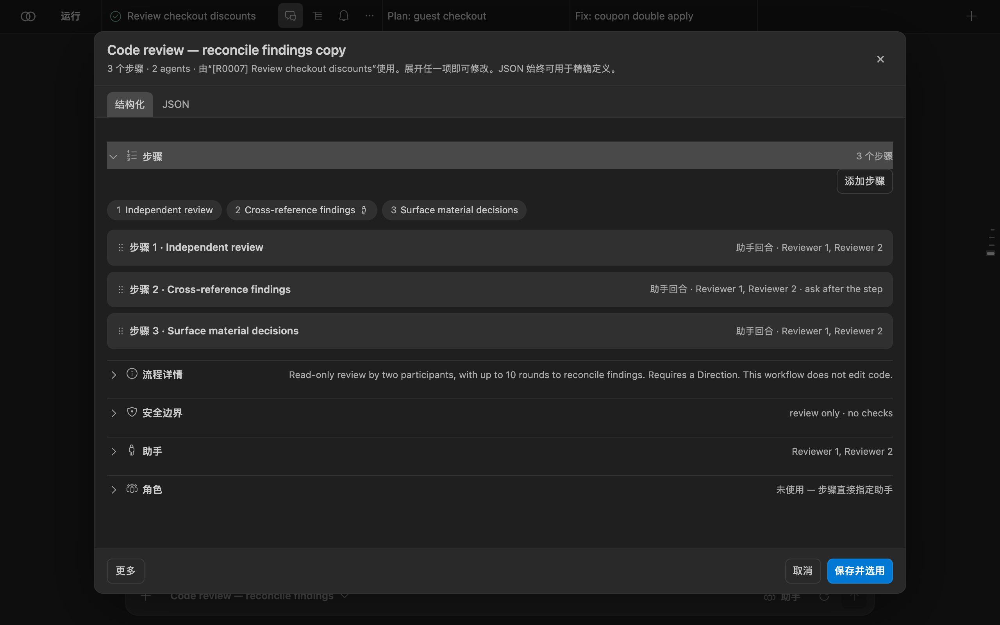
开启 bachata.advancedMode 即可显示完整编辑器：角色、一致性、类型化输出、人工确认点、能力、权限模式、审批策略、提示词模板和路径策略。流程可以按 JSON 导出和导入（流程 JSON 版本 1）。每次运行都会保留其启动时的确切流程快照。
需手动开启的本地试点
减少重复发送的模型上下文
Bachata 现已包含面向 Claude Code 与 Codex 的节省 Token 执行模式的首个源码实现。目标是只发送做出下一步决策所需的最小充分状态，而不是反复发送完整的历史回答、验证输出和对话记录。
bachata.executionContextMode；高级设置中的默认值保持不变。
legacy 仍为默认值。正在进行和可恢复的运行会保留其记录的模式。
项目发布门槛尚未通过。不构成关于 Token、成本、延迟或质量的承诺。
这为什么可能有帮助
- 本地提供方可以保留对话，同时 Bachata 还会发送一次显式交接。
- 一致性轮次可能把其他参与者的完整回答带入后续轮次。
- 浏览器工作可能需要为一次修改和预先确定的控制器检查分别获取模型回复。
- 现有的字节上限能防止负载失控，但并不会产生可精确回溯的证据。
推进计划
- 已实现：保留精确的已采信证据。 在生成精简预览之前，先存储 Bachata 自有的提示词、收到的回答和控制器证据。若无法保留精确证据，精简执行就不会启动。
- 已实现但默认关闭：试点有界的本地状态。 以类型化的任务状态、最新的控制器观察结果和限定范围的证据引用启动全新的 Claude Code 或 Codex 会话。现有流程仍为默认。
- 安全地传递一致意见。 传递已达成的共识、争议、归属和未决决策，同时不把被省略的异议当作已解决。
- 增加浏览器侧的证据回溯与安全的动作合并。 让控制器提供精确的证据页，并且仅在审批与恢复边界清晰之处，才把修改与已授权的检查合并执行。
安全边界
控制器仍然掌管 Git、写入范围、验证、集成与恢复。无效、过期、不完整或过大的状态一律按失败处理。精确的已采信证据仍可导出，提供方的私有历史不会被谎称为已捕获，也不会新增任何遥测或运行时测量层。
Browser Bridge
在 Bachata 中使用浏览器里的对话
Bachata Browser Bridge 是一个独立的 Chrome 扩展。它把 VS Code 中的 Bachata 连接到 ChatGPT、Claude 等 AI 对话网站，使浏览器中的对话可以成为流程的参与者。运行浏览器步骤时，Bridge 会把消息发送到你已连接的对话，并把回复带回 VS Code。
只有使用浏览器参与者时才需要它。Codex 和 Claude Code 不会使用它。
前置条件
- Chrome 116 或更高版本。
- 一个装有 Bachata 的本地 VS Code 窗口。Remote SSH、WSL 和 Codespaces 无法访问本地浏览器。
- 协议版本与你的 Bachata 版本相匹配的 Bridge 版本。版本不匹配会被拒绝，而不是降级运行：请同时升级两者。
- 一个已登录的 ChatGPT 或 Claude 标签页，或你自行配置的其他对话网站。
安装 Bridge
- 打开 Chrome 应用商店中的 Bachata Browser Bridge.
- 选择 “添加至 Chrome”，然后确认安装。
- 请让 VS Code 版 Bachata 与 Browser Bridge 一同更新，使其协议版本保持一致。
如需离线或开发安装，请从 官方发布页面下载 ZIP 及其校验和，用 shasum -a 256 bachata-browser-bridge-<version>.zip校验，解压后从 chrome://extensions （需开启开发者模式）加载该文件夹。从源码构建会生成可加载的 dist/ 文件夹；仓库根目录无法加载。
与 VS Code 配对
- 在 Bachata 中打开 “助手” ，把 Browser Bridge 分配给某个角色。“助手”顶部会出现 Bridge 状态标记；未配对时它显示为 “配对 Bridge”。点击它。
- 选择 “复制配对码”. “查找浏览器” 会重新开始查找； “重置配对” 会签发新的配对码。
- 在 Chrome 中打开 Bridge 弹出窗口并选择 Paste & connect。如果你自己在输入框中键入或粘贴配对码，请改为选择 “Connect to VS Code” 。
{kind=link}
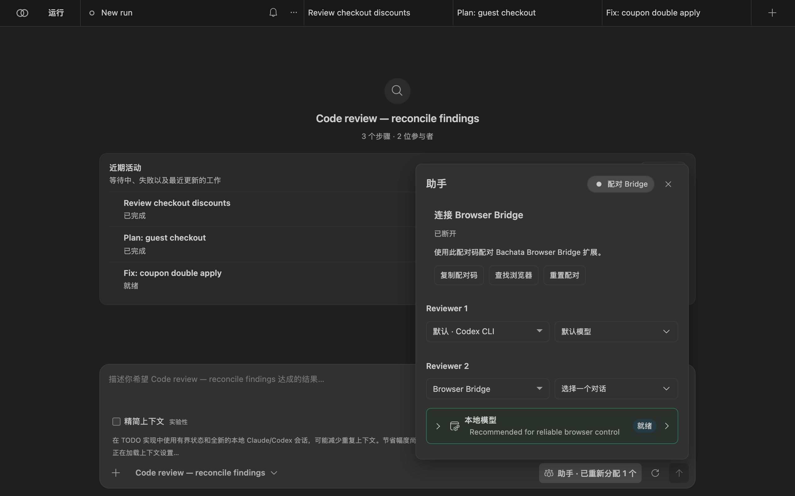

本地地址会自动填入。只有当 VS Code 显示的地址不同时，才需要打开 “Connection settings” 。Bridge 只维持一个连接，因此每个用户配置下同一时间只有一个 VS Code 窗口拥有 Bridge；其他窗口仍可使用 Codex 和 Claude Code。
选择对话
- 打开 ChatGPT 或 Claude 的对话并登录。
- 在弹出窗口中选择 “Refresh tabs”。每一行显示提供方、标题、就绪状态以及可能的限制。 “Details” 会显示标签页与对话的身份信息。
- 选择 “Use this chat” 。只有就绪的行才提供该按钮，且仅在已连接时可用。
- 在 Bachata 的 “助手”中，为浏览器角色选择该对话。


{kind=link}
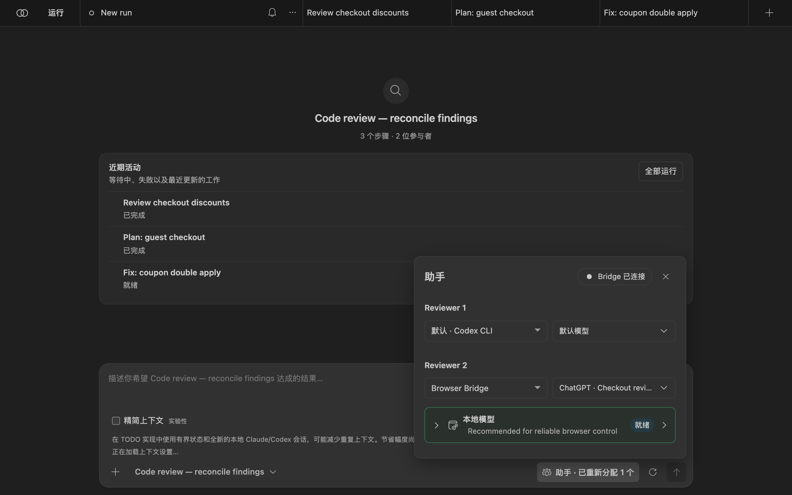
绑定在关闭弹出窗口和浏览器后台进程重启后依然有效。只有当标签页被关闭、跳转到其他网站，或其对话被手动更换时，才需要重新绑定。
其他对话网站
对于 ChatGPT 和 Claude 之外的网站，请在弹出窗口中打开 其他网站 并选择 “Set up current website”，然后允许所显示的来源。关闭弹出窗口，使用页面上的配置面板：自动检测或手动指定控件（输入框和对话区域为必需；发送、停止和新建对话控件为可选），然后进行校验。校验不会发送对话消息。

其他网站只接收文本；不支持图片和可下载文件。没有经过验证的发送和停止控件的网站可用于手动流程，但不能用于无人值守的受管运行。未绑定的网站永远不会被发现，Bridge 也绝不会替你打开这样的标签页。
限制
- 提供方网站会在不通知的情况下变动。一个可用的 Bridge 版本只能证明它在受测的网站版本上可用。
- Bridge 不会自动完成登录或验证码，也不会添加任何隐藏的提示词文本。
- 出错后，恢复流程会显示已记录的内容，绝不会自动重发提示词。
参考
命令
所有命令都在命令面板中，前缀为 Bachata:.
| 命令 | 它的作用 |
|---|---|
| 打开 | 打开 Bachata 面板。 |
| 设置 | 选择目标，以及由多少个助手参与。 |
| 诊断 | 检查提供方、Git 和流程要求，并给出修复办法。 |
| 审查文件 / 审查所选内容 | 为当前文件或所选内容准备审查草稿。 |
| 审查暂存差异 / 审查未提交的改动 | 为本地改动准备审查草稿。 |
| 审查提交 / 审查提交范围 / 对照基线审查分支 | 为 Git 历史准备审查草稿。 |
| 将问题发布到“问题”面板 | 在“问题”面板中显示问题。 |
| 修复诊断项 | 为来自编辑器或“问题”面板的诊断项准备修复草稿。 |
| 解释流程 | 说明某个流程的作用。 |
| 仓库校验项 / 初始化校验项与仓库策略 | 声明运行可以执行的仓库检查。 |
| 运行 TODO.md、预览 TODO 计划、恢复 / 停止 / 放弃 TODO 运行、显示 TODO 运行状态 | 编排来自 TODO.md 文件。 |
| 改进此项目 | 运行自我改进工作流。 |
| 查看运行包 / 重放运行包 | 打开导出的运行记录。 |
| 记录外部证据 | 记录在 Bachata 之外产生的证据。 |
| 本地数据 | 查看并删除本地运行数据。 |
| 工作区归属 | 显示哪个 VS Code 窗口可以在此工作区执行工作。 |
| 解除资源隔离 | 解除被隔离的共享资源。 |
内置流程
| 流程 | 说明 |
|---|---|
| Code review | 由一位参与者进行的只读审查。问题来自单一来源。 |
| Code review — reconcile findings | 由两位参与者进行的只读审查，最多 10 轮用于协调问题。需要“方向”。 |
| Code review and refinement | 两位参与者在最多 4 轮内审查并协调问题；随后由实现者在声明范围内修复已确认的问题。 |
| UI/UX review | 由两位审查者对易用性、无障碍和视觉层次进行只读审查。 |
| Review and prepare tasks | 两位参与者协调问题，然后准备可勾选的任务清单。 |
| Identify decisions for you | 两位参与者协调需要人工判断的选择。只读。 |
| Implementation plan | 在不修改文件的前提下产出实现计划。 |
| Implementation plan — reconcile proposals | 两位规划者在最多 10 轮内协调出一个计划。需要“方向”。 |
| Fix a bug | 由一位参与者诊断并实施修复。执行已声明的控制器检查；不创建提交。 |
| Fix a bug — reviewed tasks | 两位参与者协调诊断结果；你选择有界的任务交由控制器实现。 |
| Fix within a declared scope | 一位执行者在配置的路径内实现；控制器执行已声明的检查。需要“方向”。 |
| Diagnose and fix — model review | 两位参与者协调诊断、实施修复并进行审查。验证方式为模型审查。 |
| Deliver a feature | 协调需求与设计，然后在声明范围内实现并审查，同时执行控制器检查。 |
| Product direction review | 审查产品选择并协调建议。需要“方向”。 |
在选择器中标记为 “内部” 的流程，是用于 TODO 编排和自我改进的控制器阶段。
常用设置
| 设置项 | 默认值 | 用途 |
|---|---|---|
bachata.codexCommand | codex | Codex app server 的可执行文件。 |
bachata.claudeCommand | claude | Claude Code 的可执行文件。 |
bachata.preferredProvider | auto | 流程提供多个提供方时优先使用的那个。 |
bachata.disabledProviders | [] | Bachata 绝不能运行的提供方。 |
bachata.advancedMode | false | 显示完整的流程编辑器。 |
bachata.notificationMode | material | Bachata 显示哪些通知。 |
bachata.fixPipelineId | 留空 | 用于 “修复该问题”. |
bachata.freshReviewPipelineId | 留空 | 当所选流程不符合条件时，用于全新审查的流程。 |
bachata.maxPipelineIterations | 10 | 单次运行允许的最大连续迭代次数。 |
bachata.browserBridgePort | 43127 | Browser Bridge 连接的本地回环端口。 |
bachata.todoFile | TODO.md | TODO 编排使用的任务清单。 |
会扩大运行权限的设置（例如权限模式和外部工作目录）只从用户设置或计算机设置读取，因此你打开的仓库无法给自己授予更多权限。
隐私
Bachata 基于你的本地检出运行。没有 Bachata 账号、托管服务或遥测。提示词、所选代码和回答会发送给你选择的提供方；运行开始前，运行约定会显示每个提供方将收到什么。提供方的凭据始终留在其自身的 CLI 或浏览器会话中。
关于截图
截图展示的是真实的 Bachata 面板（dist/webview.js）和真实的 Bridge 弹出窗口，它们在 VS Code 之外的 Chrome 中，使用 VS Code 的 Dark Modern 主题配色渲染。仓库 demo-shop及其运行、问题、决策和对话标签页都是虚构的演示数据。在 VS Code 中，该面板显示在编辑器标签页内。